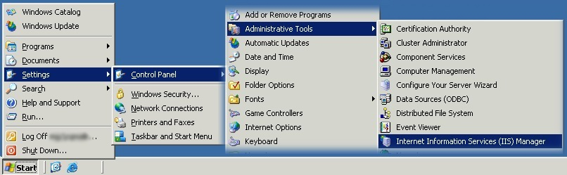
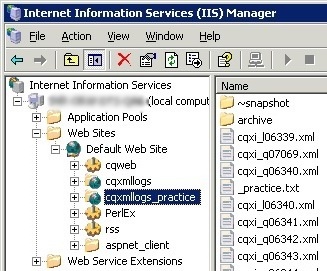

| « CQ/XML Admin Docs | Wake Up the CQ/XML Logs via IIS | Updated: |
|---|
When the CQ/XML Logs web servers restart, they forget to serve up the XML logs when they come back online. Therefore, we need to remind the servers after each reboot.
The practice logs are served up from cqqa06 and the production logs are served from cqmsgsvr. Login to the applicable machine via Terminal Server.
From the Start menu, select Settings
»
Control Panel
»
Administrative Tools
»
Internet Information Services (IIS) Manager

|
From IIS Manager, expand the tree to:
[Server Name] » Web Sites » Default Web Site On cqmsgsvr, select cqxmllogs (on cqqa06, select cqxmllogs_practice). Wait for the right pane to automatically refresh and show a file list.
That's it! Now check the logs for
production
and
practice.
If they show a list of files then you're good to go. Shut it all down and go home.
|
 |